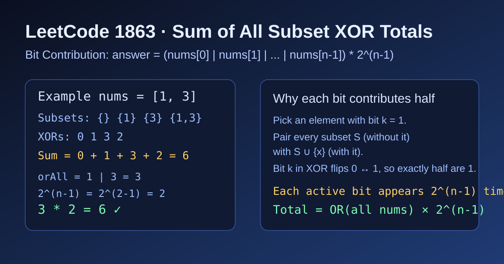

LeetCode 1863: Sum of All Subset XOR Totals (Bitwise OR Contribution)
LeetCode 1863Bit ManipulationCombinatoricsToday we solve LeetCode 1863 - Sum of All Subset XOR Totals.
Source: https://leetcode.com/problems/sum-of-all-subset-xor-totals/

English
Problem Summary
Given an integer array nums, compute the sum of XOR values of all subsets.
Key Insight
Consider one bit position independently. If that bit appears in at least one number, then across all subsets this bit is set in exactly half of subset XOR results.
Let orAll = nums[0] | nums[1] | .... Every bit set in orAll contributes 2^(n-1) times, so:
answer = orAll * 2^(n-1).
Why Half?
Pick any element that has this bit = 1. Pair each subset without that element to the subset with that element added. XOR on that bit flips between 0 and 1, so counts are balanced 50/50.
Algorithm
1) OR all numbers into orAll.
2) Left-shift by n-1 (equivalent to multiplying by 2^(n-1)).
3) Return result.
Complexity Analysis
Time: O(n).
Space: O(1).
Reference Implementations (Java / Go / C++ / Python / JavaScript)
class Solution {
public int subsetXORSum(int[] nums) {
int orAll = 0;
for (int x : nums) orAll |= x;
return orAll << (nums.length - 1);
}
}func subsetXORSum(nums []int) int {
orAll := 0
for _, x := range nums {
orAll |= x
}
return orAll << (len(nums) - 1)
}class Solution {
public:
int subsetXORSum(vector<int>& nums) {
int orAll = 0;
for (int x : nums) orAll |= x;
return orAll << (int(nums.size()) - 1);
}
};class Solution:
def subsetXORSum(self, nums: list[int]) -> int:
or_all = 0
for x in nums:
or_all |= x
return or_all << (len(nums) - 1)var subsetXORSum = function(nums) {
let orAll = 0;
for (const x of nums) {
orAll |= x;
}
return orAll << (nums.length - 1);
};中文
题目概述
给定整数数组 nums，请你求出 所有子集 的 XOR 值之和。
核心思路
按“每一位”独立思考：如果某一位在数组里至少出现过一次 1，那么在所有子集的 XOR 结果中，这一位恰好有一半为 1。
设 orAll = nums[0] | nums[1] | ...，则 orAll 中每个 1 位都会贡献 2^(n-1) 次，所以：
答案 = orAll * 2^(n-1)，实现时可写成左移 n-1 位。
为什么是“一半”
选取一个该位为 1 的元素，把每个“不包含它”的子集与“包含它”的对应子集配对。这个元素会把该位 XOR 结果翻转，因此 0 和 1 的数量完全相等，各占一半。
算法步骤
1）遍历数组，按位或得到 orAll。
2）返回 orAll << (n-1)。
3）即最终答案。
复杂度分析
时间复杂度：O(n)。
空间复杂度：O(1)。
多语言参考实现（Java / Go / C++ / Python / JavaScript）
class Solution {
public int subsetXORSum(int[] nums) {
int orAll = 0;
for (int x : nums) orAll |= x;
return orAll << (nums.length - 1);
}
}func subsetXORSum(nums []int) int {
orAll := 0
for _, x := range nums {
orAll |= x
}
return orAll << (len(nums) - 1)
}class Solution {
public:
int subsetXORSum(vector<int>& nums) {
int orAll = 0;
for (int x : nums) orAll |= x;
return orAll << (int(nums.size()) - 1);
}
};class Solution:
def subsetXORSum(self, nums: list[int]) -> int:
or_all = 0
for x in nums:
or_all |= x
return or_all << (len(nums) - 1)var subsetXORSum = function(nums) {
let orAll = 0;
for (const x of nums) {
orAll |= x;
}
return orAll << (nums.length - 1);
};
Comments